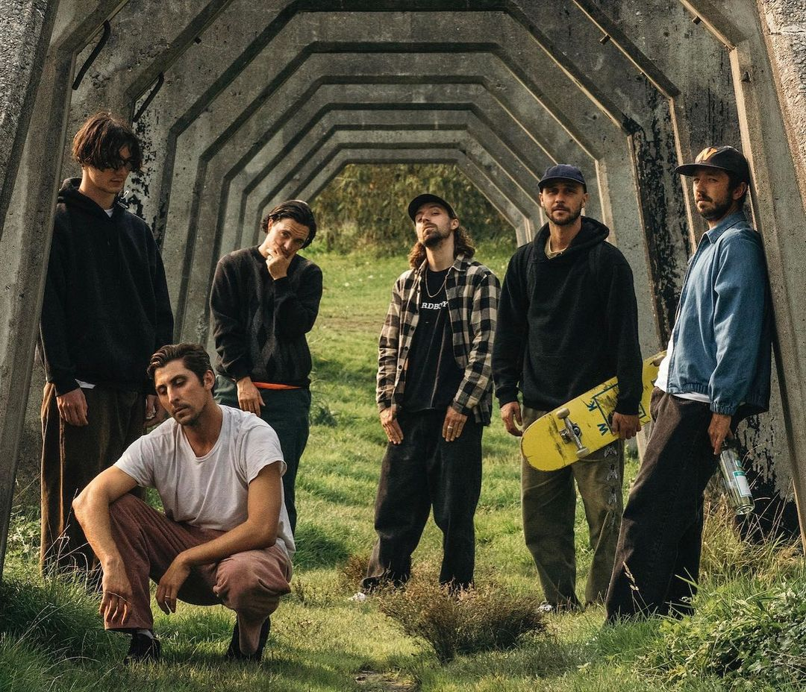
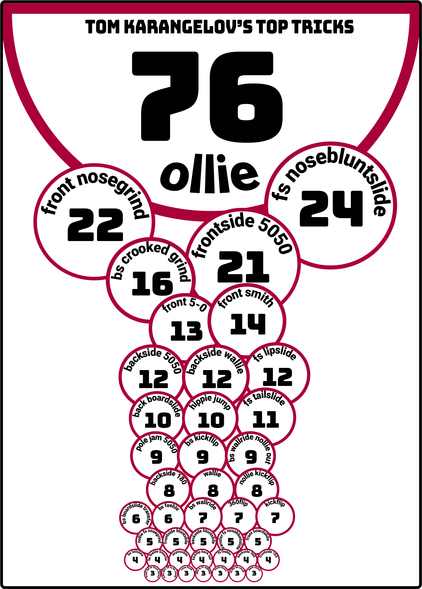
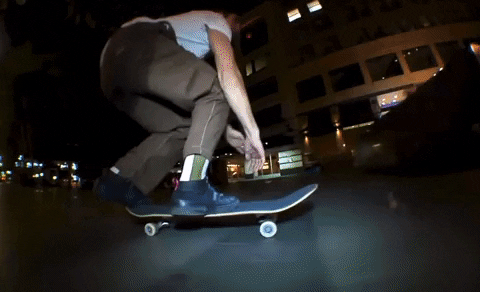
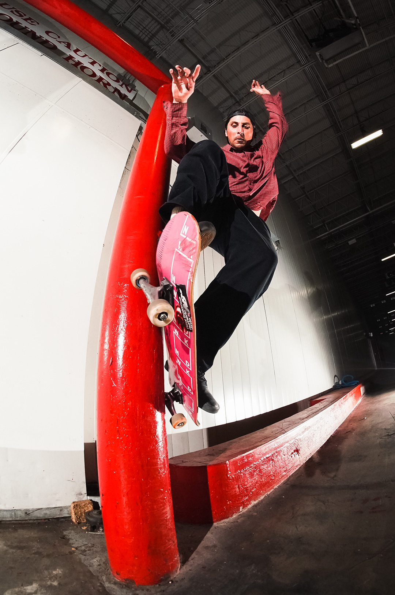
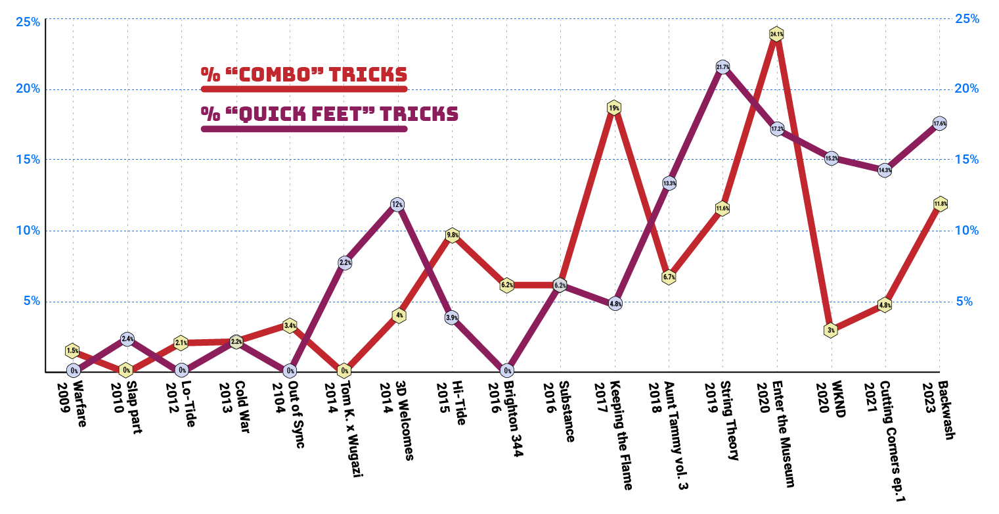
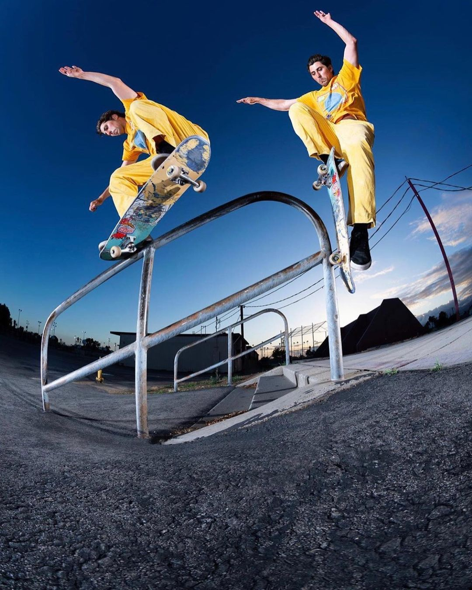

DATA & METHODOLOGY
The Karangelov dataset consists of every clip from every part of Tom's career-to-date. So far, that’s 626 tricks expressed over 542 clips through 17 parts. It’s one of the largest datasets we’ve worked with for a single skater’s career, easily surpassing professionals whom have been in the game for twice as many years. While we did include one shared part (Skate Mental’s Aunt Tammy vol 3) and four “shorter” promotional parts that clock in at under 2 minutes, we did not log Tom’s guest clips in videos where he didn’t have a distinctive ‘part’.
We logged tricks, obstacles, spots, outfits, and other notable patterns. As is the way, we consider the totality of a trick when recording it, so a front smith to back 180 is distinct from a straight up front smith. Obviously.
You can check out the data here.
Now that we’ve compiled the facts, let’s line ‘em up and see if we can’t follow Tom’s path to victory. Remember, you can’t spell “Killing it” without “K”.
Lesson 1: Deliver the Goods
Tom first arrived on the scene as a floppy-haired youngster back around 2009 and has somehow managed to have his tricks in regular rotation in front of our eyeballs ever since. He manages this with good old-fashioned hard work in the form of full skate parts of both the standalone and part-of-a-full-length variety.
In the 14 years since we first met Tom he has delivered no less than 17 parts! And that doesn’t include the Rough Cuts, Raw Files, Out Theres, guest tricks in colleague’s parts, rollerblade collaborations, his new WKND part that may or may not already be out depending on how efficient we are at getting this article done, and random Berrics/Thrasher/Transworld online content.
We’re talking real parts here with an average running time of 2:51 (including intros and credits) and an average trick count of 37. Tom K is always skating. How does he stay motived?
“I have these friends that I skate with and they're skate rats. They have jobs and none of them are fully sponsored and they just love skating. They're ready to meet up every weekend and skate. So I just got really lucky to have a really cool friend group and that motivates me. When your friends who are buying shoes and boards are skating really hard that's inspiring.”
"I also skate and travel with the WKND crew. Similar to my local crew that I grew up with, a lot of them work throughout the week and skate hard on the weekends. It’s really cool to be on trips with dudes that have jobs and take the time off to travel and keep the dream alive. It’s also inspiring being around the JITS: Nik, Tanner, Riley, and Guy. Hearing what skating is to them and watching them skate is exciting. I come from a different time period so watching skateboarding change in front of me is pretty cool."
Not only is Tom and friends always skating, they're always filming. Where does the work ethic come from?
“Jamie Thomas instilled a work ethic into me to film. The job of a pro skater is to skate and inspire others to skate. The best way I can do that is by filming video projects. So I've always stuck to that. And if I don't film it for a video part I'll have my friend film it for Instagram. I've gotten better at that since it's become a thing. I have a lot of productive, cool people in my life.”
Take a high-level view of what delivering the goods looks like:
But does Tom ever get injured?
“I've been having some pain in my butt cheek. There are times I have to push through it. When it's pinching I'll be more picky about when I skate and then when the time comes I'm trying to do my trick in 5 to 10 tries so it doesn't hurt. But that's it other than rolled ankles. I've never gotten hurt as bad as some of my peers. I don't know how it's worked. I've gotten really lucky I think.”
Lesson 2: Film Is Your Friend
So Film With Your Friends
Tom knows that it pays to show your contemplative side with a smattering of film clips. Make it grainy and mysterious and probably in black and white with those sprocket holes on the side. Tom and his camera-welding collaborators (all named Matt) give you plenty B-roll in super 8 or 16mm film in nearly every video project he has made.
Pray tell what should you be pointing your Bolex at? A quick survey of Tom’s non-skate film clips include multiple instances each of staring out car windows, standing next to the ocean, looking through a chainlink fence, and walking up stairs. Two thirds of Tom’s videos tie tricks together with film cuts of him pushing towards the tricks, the classic run-and-throw-down, rolling away from the trick, and several clips of him sitting at the spot.
Round it all out with at least 10 actual skateboarding tricks on super8 film. This is a good place to mention Matt Payne’s 2021 16mm film meditation on Tom entitled Weird Way Home, whose tricks we did not log as part of our dataset. You should watch it anyway.
“I know in skating 16mm and Super8 are popular forms of b-roll. Maybe even some would say they're overused but I believe my friends do it right and it's natural to them and they have fun doing it so I'm down. Grant films a lot of stuff on 16mm and Matt Bublitz has filmed half my life on super 8 but Matt Payne is the one I usually film 16mm with. He pretty much has studied that camera for over a decade and has it down to science. It’s pretty intimidating to be filmed on because the film is so expensive. So we’ve both had to trust each other and use judgement on what tries to film and not. I can get intimidated by film but I'm down for my friend's ideas because in the end the execution is great”
Lesson 3: Lean Into Your Strengths
It has been suggested that a more reliable road to happiness and success lies not in identifying your weaknesses and then striving to reduce those deficits, but rather to fortify your strengths and natural abilities. And with that in mind...

or check Tom's Top Tricks in list form here.
While most skaters stack the largest counts with the simplest tricks, Tom’s chart really takes it back to basics. Setting aside the fact that ollies nearly triple the totals of other top tricks, Tom’s bag is more-or-less confined to a sampling of fundamental moves executed in his natural, Goofy stance.
Tom’s count of unique tricks is 221 (35.3%). This is a hefty percentage built not on a large variety of tricks but his ability to creatively link tricks and add variations to his favorites. This point is really driven home when we look at the counts of tricks from a non-natural stance:
- Nollie tricks: 20 (3.2%)
- Switch tricks: 5 (0.8%)
- Fakie tricks: 3 (0.5%)
Seriously. 626 tricks logged and only 3 were launched backwards! And we're including half cab tricks here.
Tom doesn’t skate backwards. Tom doesn’t skate switch. Tom rarely pops off the nose.
“I never really thought of it [not doing nollie or switch tricks]. Ed Templeton is one of my favorite skaters. I know he half cabs, but I feel like growing up I watched Templeton skate and studied the tricks he was doing. I wanted to skate like Ed. And I don't remember Ed having one switch trick, except maybe switch big spins. I looked up to that heavily and then as I got older I was into Omar Salazar and those two dudes skate fast and skate simple. So maybe deep down I'm taking from that somehow. I think there is a connection there.”
What are some other tricks Tom isn't doing?
Heelflips:
- Tom’s kickflip to heelflip ratio is 43 to 2 (and that isn’t even including 360flips)
- Number of heelflip variations beyond just a normal heelflip: Zero.
Manuals:
- There are only 13 total manual tricks combined. That’s just 2%.
- Of those 13 manual tricks, 12 are distinct variations. 6 on the front wheels, 7 on the back.
Grabs:
- Tom has a couple grab tricks, a pair of Fastplants, and a yank out or two. All said and done, you’ve got less than a 1% chance of seeing Tom touch his board when he does a trick.
The lesson here is clear: Rather than overcoming your liabilities, lean into your natural assets to take it to the next level. It’s the Tom K way.
Speaking of leaning into it, let us group similar tricks together and see if we can spot some more keys to unlocking your inner Karangelov.
- Ride on tricks: 17
- Noseblunts: 42 - all frontside
“That's Ed Templeton. Ed literally owned a house across the street from the middle school I learned to skate at. So I'm hearing he lives right there and I'm watching him on video and I start to emulate those things he was doing. I like noseblunt and nosegrind and going that way more than 5-0s for some reason. I just had a connection to that. And then thinking they looked good in footage. I want to do them cause Ed does them. You just emulate the tricks of your favorite skaters and noseblunts was one of them. And I got comfortable on them so I could take them to weirder and weirder things as I got older.”

- Bluntslides: 17
6 front, 11 back - Smith grinds: 23 (10 distinct variations)
22 front, 1 back - Feebles: 22 (10 distinct variations, again)
5 front, 18 back - Total wallride count: 31
- Likelihood of backside wallride being nollied out of: 52%
“When we were filming for Hi-Tide, between Zero and getting on 3D, I remember learning about Pontus and watching In Search of the Miraculous, and he's just wallriding around Malmo and Copenhagen. It was cool how he was just wallriding around locally. And then I got super into wallriding every which way. And Matt would tell me that I have a lot of wallrides. I think in my life of skating I will just hyper focus on what I'm into in that moment.”
- Crooked grinds: 27 (all backside)
- Frontside flips: 0 (except when out of a fs tailslide)
- Hippie jumps: 14 (4 in combination with another trick)
- Pole jam tricks: 26 (14 unique variations)
“Wade Burkitt does that insane pole jam in Thrill of It All. And I think everybody my age would agree when Mind Field came out Jake Johnson really opened up wallies and pole jams.”

Photo by Joel Meinholz.
- Noseslides: 15 (13 unique)
12 back, 3 front - Tailslides: 39 (19 unique)
15 back, 24 front
How about tracking the combined totals of some of Tom’s favorite moves over the course of his career on video. Here we are grouping similar tricks together (so a front smith to backside 180 out is reported as a "smith grind").
Use the dropdown bar to select different trick groups and see the counts over time. Remember that some years (2014, 2106, & 2020) Tom had multiple parts and a couple of years (2011, 2022) Tom didn't drop any.
Lesson 4: Be Quick On Your Feet
So how does a skater with a relatively simple bag of tricks mix it up and keep the viewers engaged?
In part, with lots of lines and some quick feet.
For this dataset, a line is defined as a clip featuring 2 or more tricks. For over 21% of his clips Tom K serves up a line. That’s 117 career lines and counting.
And while Tom rarely strings together more than 3 tricks (his longest line was 4 tricks, 3 of which were ollies down stairs), he often adds a little spice to his lines by finding a way to incorporate a rapid pre- or post- banger trick with minimal setup time.
“So here's an example: The other weekend I found a bump-over-bar and then right when you land there is a bump-over-flat almost instantly. [Friend and filmer] Matt Bublitz was like, “Let's try a line here". I want to ollie the bump-over-bar and then do a trick on the second thing. And I don't know what the second trick is. I'm just gonna see what happens. Right now it's hitting two spots that are really close together. For this WKND video that I'm filming for right now, all my footage is, like, 2 things. This and then this. For some reason I'm really hyped on that and I keep finding spots like that.”
These “2 things” lines account for the plethora of ollies in the Tom K dataset. 60 of the 76 ollies recorded occurred as part of lines. 45% of Tom’s lines contained at least one ollie. And if you really want to replicate the Karangelov success formula, toss a bump-over-bar ollie into your line, as happened 15 times… 4 times in Backwash alone.
“Right now, in my life, I'll go hang out with some friends from East LA and I'll tell them, "Yo, if you ever find a bump to bar with something after it, let me know. Even if you think it's too close, I'm still down to check it out."
"When I was a kid I would skate big rails for fun, but now I fear them. But I would do them if there was a bump-over-bar first. I wouldn’t have the confidence to just 50 it without the bump-over-bar before. Seriously, if there was a bump-over-bar and a 14 [stair rail] I think I would get the courage to connect the two. But I would never skate just the 14.”
Tom stays on his toes and so should you. We recorded 49 instances of tricks being of the “quick feet” variety, where the setup time between the previous trick and the one logged was slender at best.

"I kept finding spots and realizing that, "Oh, if you just ollie up this quick and then hit this quick maybe that's a way to get different kinds of footage out of LA and Orange County. That's definitely something that's crazy; that I've lived in this area that is the most heavily skated area probably in the world and and it seems impossible to find spots. So maybe I realized at some point if I changed what I am looking for I'll find more things that I'm stoked on.”
Lesson 5: Unlock the Power
of Combinations
Another source of Tom K’s power comes from Combos. No, not those pretzel snacks filled with processed cheese, but the wondrous ways Tom unlocks spots by combining adjacent obstacles. From his first Warfare part back in 2009 to his latest part in Backwash, Tom has gone ledge-to-curb, ledge-to-wall, rail-to-ledge, curb-to-pole, ledge-to-ledge, and so on a total of 45 times. And let's not forget those tasty pole-jam-handrail (jamrail) tricks.

“What I keep thinking happens is that I do this hyper-focus thing. Like, during String Theory I remember I had maybe like one or two 5050-to-something tricks. And I remember thinking that it would be sick if a whole section of the part was like that. I'd find something like a 5050 to noseslide and I think it'd be cool if there was something with a 5050 to front board or then a 5050 to polejam. And then it was kinda themed.”
Note: We don’t include flip-into tricks in our combo count (there were 7 of those), but your damn right we included the 4 times Tom hippie jumped in combination with another trick.
With the 5 lessons above you have passed the rubicon on your journey towards skate stardom. But the campaign is far from complete. What spots should you skate? What type of hat should you wear? How seriously should you take all this? And what will you do when you encounter the inevitable stoppers of skateboarding?
You'll find all the answers, plus a whole lot of percentages, some charts, and plenty of gifs when 4PLY returns with the Tom Karangelov Guide To Success: Part 2.
In the meanwhile, study up.